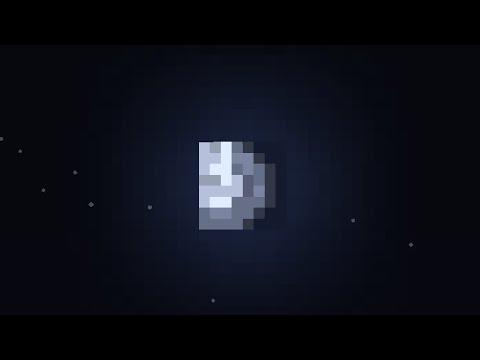

Click me to display Date and Time.
Day or night time? Witch do you prefer?
Day time

Night time
Here is the official minecraft trailer for you to watch
Play
Pause
Sorry, your browser does not support HTML5 video.
Information om Minecrafts framgång, Survival mode